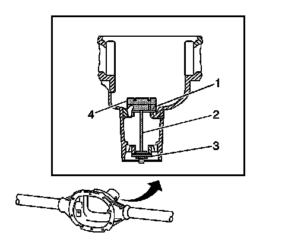
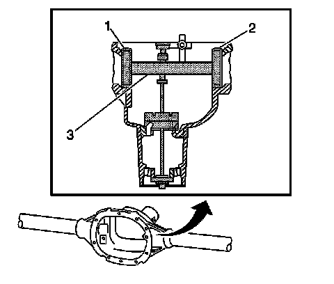
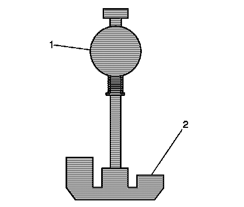
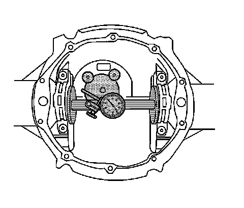

Pinion Depth Adjustment (8.6, 9.5, 9.5LD Inch Axles)
Pinion Depth Adjustment (8.6, 9.5, 9.5LD Inch Axles)
Tools Required
^ J 21777-85 Gage and Plate, 9.5/9.5LD inch axle
^ J 21777-86 Side Bearing Disc, 9.5/9.5LD inch axle, 2 Required
^ J 34925 Pinion Setting Gage and Components
^ J 8001 Dial Indicator Set
Important: Make sure all of the tools, the differential side bearing bores, and the pinion bearing cups are clean before proceeding.
1. Lubricate the pinion bearings with axle lubricant. Refer to Fluid and Lubricant Recommendations.
2. Install the pinion bearings into the axle housing.

3. Assemble the following components into the axle housing:
^ For the 8.6 in axle, assemble the J 21777-35 (1), the J 21777-43 (2), the J 21777-42 (3), and the J 21777-29 (4) as shown.
^ For the 9.5/9.5LD in axle, assemble the J 21777-8 (1), the J 21777-43 (2), the J 21777-42 (3), and the J 21777-85 (4) as shown.
4. While holding the J 21777-43 stationary, install an inch-pound torque wrench on the nut of the J 21777-43 and tighten the nut until a rotating torque of 1.7 Nm (15 lb in) is obtained.
Rotate the assembly several times in both directions in order to seat the pinion bearings.
5. Check the rotating torque of the assembly. If the torque is less than 1.7 Nm (15 lb in), tighten the nut on the J 21777-43 until a rotating torque of 1.7-2.3 Nm (15-20 lb in) is obtained.

6. Assemble the following components into the differential carrier bore of the axle housing:
^ For the 8.6 in axle, assemble the J 21777-45 (1, 2) to the J 21777-1 (3) as shown.
^ For the 9.5/9.5LD in axle, assemble the J 21777-86 (1, 2) to the J 21777-1 (3) as shown.
7. Install the bearing caps.
Notice: Refer to Fastener Notice.
8. Install the bearing cap bolts.
Tighten the bearing cap bolts to 75 Nm (55 lb ft).
9. Rotate the J 21777-1 within the J 21777-45, 8.6 inch axle, or the J 21777-86, 9.5/9.5LD inch axle. The J 21777-1 must rotate back and forth freely within the discs. If the J 21777-1 does not rotate freely, disassemble the components, inspect for proper seating and/or mis-aligned components and re-assemble.

10. Align the plunger of the J 21777-1 (1) to the 8.5 inch gage block setting of the J 21777-29, 8.6 inch axle, or the J 21777-85, 9.5/9.5LD inch axle (2).
11. Install the J 8001 to the J 21777-1 as follows:
1. Loosely clamp the J 8001 onto the stem on the J 21777-1.
2. Place the contact pad of the J 8001 onto the mounting post of the J 21777-1.
3. With the contact pad of the J 8001 touching the mounting post of the J 21777-1, loosen the lock nut on the J 8001 and push down on the J 8001 until the needle the J 8001 has turned 3/4 of a turn clockwise.
4. Tighten the clamp on the J 8001 finger tight.
12. Move the plunger of the J 21777-1 back and forth until the needle of the J 8001 indicates the greatest deflection.
The deflection is the point where the needle changes direction.

13. At the greatest point of deflection, move the housing of the J 8001 until the needle indicates zero.
14. Move the plunger of the J 21777-1 back and forth again to verify the zero setting. Adjust the housing of the J 8001 as necessary to set the needle to zero.
15. Rotate the plunger of the J 21777-1 away from the J 21777-29, 8.6 inch axle, or the J 21777-85, 9.5/9.5LD inch axle, until it no longer touches the J 21777-29 or the J 21777-85.
16. The value indicated on the J 8001 is the thickness of the shim needed in order to set the depth of the pinion.
17. Select the shim that indicates the proper thickness. Measure the shim with a micrometer in order to verify that the thickness is correct.
18. Remove the pinion depth setting tools.
19. Remove the pinion bearings.
20. Install the pinion shim between the pinion gear and the inner pinion bearing.